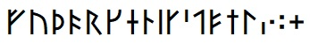
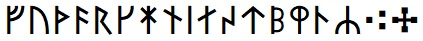
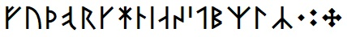
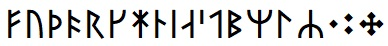

These are a set of four Unicode Runic fonts covering versions of the Younger Futhark (comprising 16 runes) used at various times and places:
BabelStone Runic Short Twig (24 points)

BabelStone Runic Long Branch (24 points)

BabelStone Runic Norse (24 points)

BabelStone Runic Norn (24 points)

The tables below render each character using the respective BabelStone runic font, either using the font installed on your local machine or using WOFF fonts if the font is not installed on your local machine.
| Code Point | Character Name | Transcription | Short Twig | Long Branch | Norse | Norn |
|---|---|---|---|---|---|---|
| 16A0 | RUNIC LETTER FEHU FEOH FE F | f | ᚠ |
ᚠ |
ᚠ |
ᚠ |
| 16A2 | RUNIC LETTER URUZ UR U | u | ᚢ |
ᚢ |
ᚢ |
ᚢ |
| 16A6 | RUNIC LETTER THURISAZ THURS THORN | þ | ᚦ |
ᚦ |
ᚦ |
ᚦ |
| 16A8 | RUNIC LETTER ANSUZ A | ą | ᚨ |
|||
| 16AC | RUNIC LETTER LONG-BRANCH-OSS O | ą | ᚬ |
|||
| 16AD | RUNIC LETTER SHORT-TWIG-OSS O | ą | ᚭ |
ᚭ |
||
| 16AE | RUNIC LETTER O | ą | ᚮ |
|||
| 16B1 | RUNIC LETTER RAIDO RAD REID R | r | ᚱ |
ᚱ |
ᚱ |
ᚱ |
| 16B4 | RUNIC LETTER KAUN K | k | ᚴ |
ᚴ |
ᚴ |
ᚴ |
| 16BC | RUNIC LETTER LONG-BRANCH-HAGALL H | h | ᚼ |
ᚼ |
ᚼ |
|
| 16BD | RUNIC LETTER SHORT-TWIG-HAGALL H | h | ᚽ |
|||
| 16BE | RUNIC LETTER NAUDIZ NYD NAUD N | n | ᚾ |
|||
| 16BF | RUNIC LETTER SHORT-TWIG-NAUD N | n | ᚿ |
ᚿ |
ᚿ |
|
| 16C1 | RUNIC LETTER ISAZ IS ISS I | i | ᛁ |
ᛁ |
ᛁ |
ᛁ |
| 16C5 | RUNIC LETTER LONG-BRANCH-AR AE | a | ᛅ |
ᛅ |
||
| 16C6 | RUNIC LETTER SHORT-TWIG-AR A | a | ᛆ |
ᛆ |
ᛆ |
|
| 16CB | RUNIC LETTER SIGEL LONG-BRANCH-SOL S | s | ᛋ |
ᛋ |
||
| 16CC | RUNIC LETTER SHORT-TWIG-SOL S | s | ᛌ |
ᛌ |
ᛌ |
|
| 16CD | RUNIC LETTER C | s | ᛍ |
|||
| 16CF | RUNIC LETTER TIWAZ TIR TYR T | t | ᛏ |
|||
| 16D0 | RUNIC LETTER SHORT-TWIG-TYR T | t | ᛐ |
ᛐ |
ᛐ |
|
| 16D2 | RUNIC LETTER BERKANAN BEORC BJARKAN B | ƀ | ᛒ |
ᛒ |
ᛒ |
|
| 16D3 | RUNIC LETTER SHORT-TWIG-BJARKAN B | ƀ | ᛓ |
|||
| 16D8 | RUNIC LETTER LONG-BRANCH-MADR M | m | ᛘ |
ᛘ |
ᛘ |
|
| 16D9 | RUNIC LETTER SHORT-TWIG-MADR M | m | ᛙ |
|||
| 16DA | RUNIC LETTER LAUKAZ LAGU LOGR L | l | ᛚ |
ᛚ |
ᛚ |
ᛚ |
| 16E6 | RUNIC LETTER LONG-BRANCH-YR | ʀ | ᛦ |
ᛦ |
ᛦ |
ᛦ |
| 16E7 | RUNIC LETTER SHORT-TWIG-YR | ʀ | ᛧ |
|||
| 16EB | RUNIC SINGLE PUNCTUATION | ᛫ |
᛫ |
᛫ |
᛫ |
|
| 16EC | RUNIC MULTIPLE PUNCTUATION | ᛬ |
᛬ |
᛬ |
᛬ |
|
| 16ED | RUNIC CROSS PUNCTUATION | ᛭ |
᛭ |
᛭ |
᛭ |
|
| 16EE | RUNIC ARLAUG SYMBOL | ᛮ |
ᛮ |
ᛮ |
ᛮ |
|
| 16EF | RUNIC TVIMADUR SYMBOL | ᛯ |
ᛯ |
ᛯ |
ᛯ |
|
| 16F0 | RUNIC BELGTHOR SYMBOL | ᛰ |
ᛰ |
ᛰ |
ᛰ |
The table below lists ZWJ ligatures for bind runes that are currently supported in this font. Additional ligatures will be added on request.
| Font | Ligature | Code Points | Glyph |
|---|---|---|---|
| Short Twig | A-Þ | 16C6 ZWJ 16A6 | ᛆᚦ |
| Script | Language | Features | Explanation |
|---|---|---|---|
| Runic <runr> | Default <dflt> | Glyph Composition Decomposition <ccmp> | For producing ligatured "bind runes". |
| Font | Version | Date | Notes |
|---|---|---|---|
| BabelStone Runic Short Twig | 3.000 | 2018-02-11 | Initial release |
| 3.001 | 2018-02-15 | Minor changes | |
| 3.002 | 2018-02-17 | Fix ligatures | |
| BabelStone Runic Long Branch | 3.000 | 2018-02-11 | Initial release |
| 3.001 | 2018-02-15 | Minor changes | |
| BabelStone Runic Norse | 3.000 | 2018-02-11 | Initial release |
| 3.001 | 2018-02-15 | Minor changes | |
| BabelStone Runic Norn | 3.000 | 2018-02-11 | Initial release |
| 3.001 | 2018-02-15 | Minor changes |
BabelStone Younger Futhark is licensed under the SIL Open Font License 1.1, which means you are free to use it for personal or commercial purposes, and to redistribute it by itself or as part of a free or commercial software package, just as long as you do not sell the font on its own. The license also allows you to modify the font in any way you like, as long as the modified font does not use "BabelStone" in its name. Please read the license for details.
BabelStone Runic | BabelStone Runic Elder Futhark | BabelStone Runic Staveless | BabelStone Runic Dotted | BabelStone Anglo-Saxon Runes | BabelStone Moon Runes